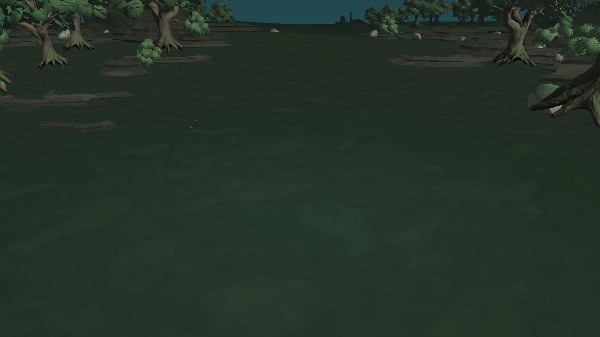
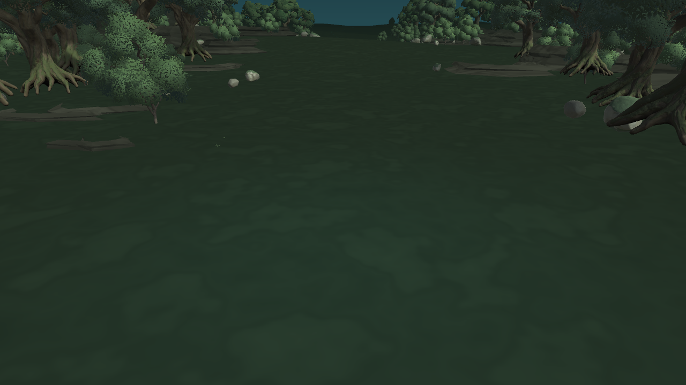

Lumen Swarm / 森林画質比較
WebGL軽量版をプレイする
同一森林素材・地形・カメラ。Unity Editorで撮影した環境比較で、ランタイムのWISPと実機FPSは含みません。

WebGL軽量版 樹木37本 / 下草64配置
Mac高画質版 樹木94本 / 下草300配置
Unity Editor → Lumen Swarm → Forest Compare。各シーンはPlay可能。これは本番の美術完成版ではなく、無料素材で画質差を測る初回試作です。